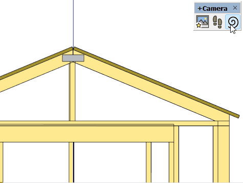

Spin View
Spin the view on the target axis
Tool Operation
Click and drag to spin the view.
Tips
This tool is useful if you need to make a window-selection at an unusual angle.
Click and drag farther from the center of the view for more precise control.
Click to learn more...